Her voluntary hard-working work made connections to a lot of families regarding the Polish literature. Without her work there woildn't be any annual Vigils and wouldn't affect the positive energy of the Polish community in Clonmel. She is a great volunteer and uses her inniative to develop such an idea.
 Polish School in Clonmel
Polish School in Clonmel
Our team
Below are cards of our talented team of teachers. Each member has unique talents and a woderful talent along with great experience with a high degree in education. You should check out everyone and hopefully you will be convinced to join us even more.
Patrycja Lentowszczyk - Cichocka
Violetta Biedowicz
She is very hard working and puts in all her passion for such a difficult job. She organises the school's finances and her work is mostly based off voluntary work.

Anna Głowińska - Watt
She developed pedagogical knowledge in secondary schools in Bydgoszcz and the 7th High School. She collaborated with the Musical Society I. J. Paderewski in Bydgoszcz, where as assistant director she co-created the International Piano Competition for them. I. J. Paderewski, promoting piano music and Polish culture. A lover of literature and classical music, theater and Iberian language and culture.
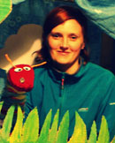
Marta Fonrobert
Since 2012, she has been extending his knowledge about the Irish education system, completing the various stages of study in early childhood education at the University of Waterford and practicing in various kindergartens and schools in the Tipperary region.
In educational activities, she values professionalism and individual approach to children and young people. In her work at the Polish School in Clonmel, she is very creative and focuses on instilling in students passion and fascination with culture, literature and Polish language.
Teacher's motto: "Make learning a pleasure for students, not a boring chore".

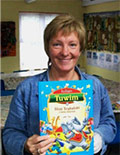
Ewa Majewska
For 30 years I was the head of the children's department in the library. M. Sklodowska-Curie in Police. For two terms, I worked as the chairwoman of the Association of Polish Librarians Association.
At the center of my work there are activities "with a book" and "for a book".
For four years I have lived with my husband in Cashel, Ireland. From April 2009, as a volunteer, I organize regular meetings at the library in Cashel. In the autumn of 2012, I established a cooperation with the Polish School in Clonmel which continues to this day.
My hobbies are: sewing "crosses", decoupage, esoteric. "
Class timetable
All the lessons range from '0' classes up to all primary, secondary education and even the preperation for the Leaving Certificate as Polish being the main language which counts as a foreign language. We teach Polish and also general knowledge about Poland and have every Saturdays a math class for children who are struggling with it in Irish schools. For about three years we also teach the Polish language as a foreign language and even encourage kids to join along if this is not their first language. We also organize monthly library meetings along with art and crafts classes. There are also speech therapy classes and for three years we also have preschool classes for younger siblings. Each students meets up weekly at a specific organised time where parents would have time to drop them off and work around Irish school times. Classes are not numerous and each child is actively participating and the teacher listeing out to each and everyone. These lessons are more similar to individual tutoring than lessons known from parents.
| Day | Class | Times | Subject | Teacher |
|---|---|---|---|---|
| Tuesday | 2 | 16.15 - 18.15 | Polish | mgr Lidia Adamus |
| Tuesday | 4 | 16.30 - 18.30 + 18.30 - 19.00 | Polish + General Knowledge | mgr Marta Fonrobert + mgr Anna Watt |
| Tuesday | 6 | 18.00 - 18.30 + 18.30 - 20.30 | General Knowledge + Polish | mgr Anna Watt + mgr Marta Fonrobert |
| Tuesday | 2 Secondary | 18.10 - 20.40 | General Knowledge + Polish | mgr Julia Adamczak |
| Tuesday | LC | 19.00 - 21.00 | Polish | mgr Anna Watt |
| Wednesday | Preschool | 15.30 - 17.30 | --- | mgr Justyna Plaza |
| Wednesday | 1 | 15.50 - 17.50 | Polish | mgr Edyta Zawisza |
| Wednesday | 3 | 17.30 - 19.30 | Polish | mgr Justyna Plaza |
| Wednesday | 5 | 17.00 - 19.30 | Polish + General Knowledge | mgr Marta Fonrobert |
| Wednesday | 3 Secondary | 18.10 - 20.40 | Polish + General Knowledge | mgr Julia Adamczak |
| Saturday Fortnight | Age depending | " " | Maths | mgr Marta Sawicka |
| Monday Fortnight | --- | 16.00 - 20.00 | Speech Therapy | mgr Malgorzata Jacon |
Sign up
Education in our school is paid and it amounts to:
25e for registartaion (this is a once off payment when registering your first child).
351e for the whole school year or 176e per semester which is payable til the 31st Septmber and 28th February. It can be paid in installments but it must have been finalised by the school first.
With another sibling is 501e which are two children while if they are three then the third is free.
Important : If you make a bank transfer directly from your account, please include the NAME and NAME OF THE CHILD in the transfer title. If you make a payment at the bank's office, we require confirmation in the student's notebook of the PAYMENT NUMBER and the sms with the payment number and the student's first and last name.
Adress for transfers:BIC: BOFIIE2DXXX
IBAN: IE08 BOFI 9060 0529 1296 09
Account number: 29129609
Branch code: 90-60-05
Bank of Ireland
Parnell St
Clonmel
Co.Tipperary
Ireland
Documents to download
Our Sponsors
 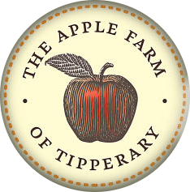
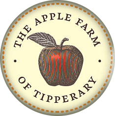
 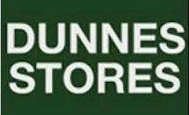
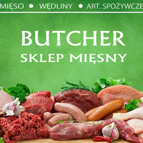
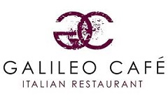
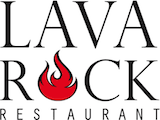
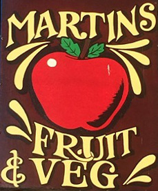
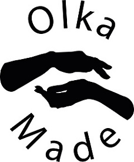
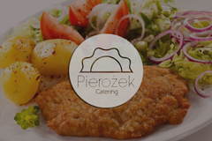
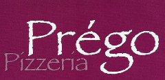
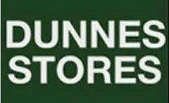
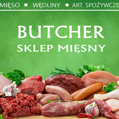
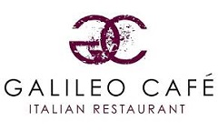
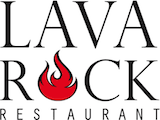
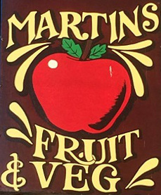
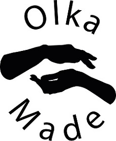
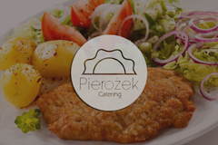
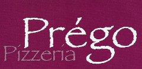
Our past Sponsors
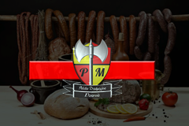
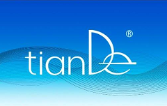
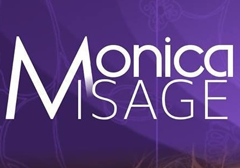
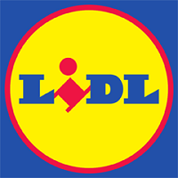
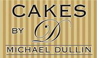
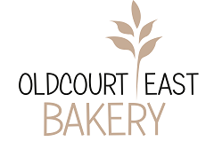